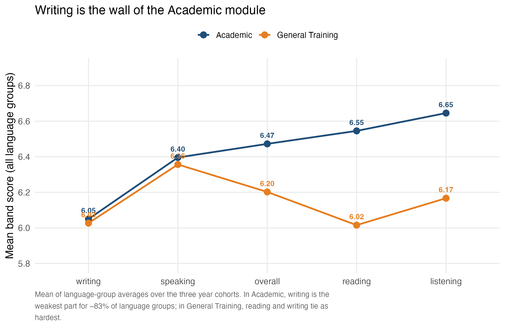
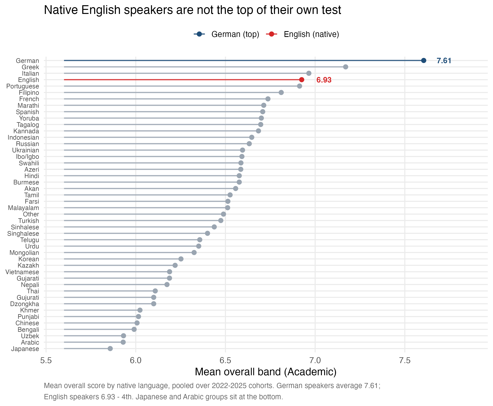
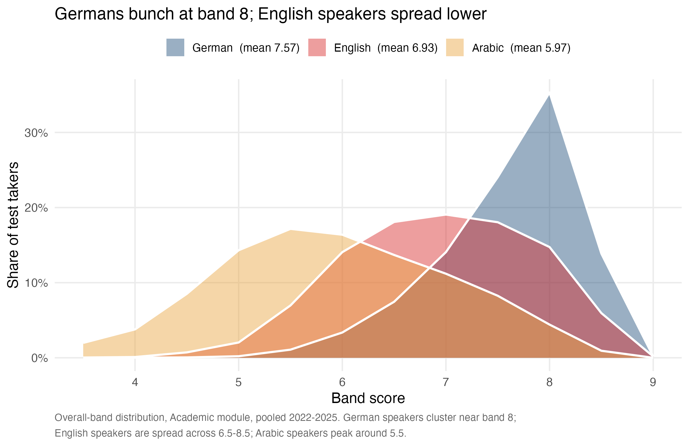
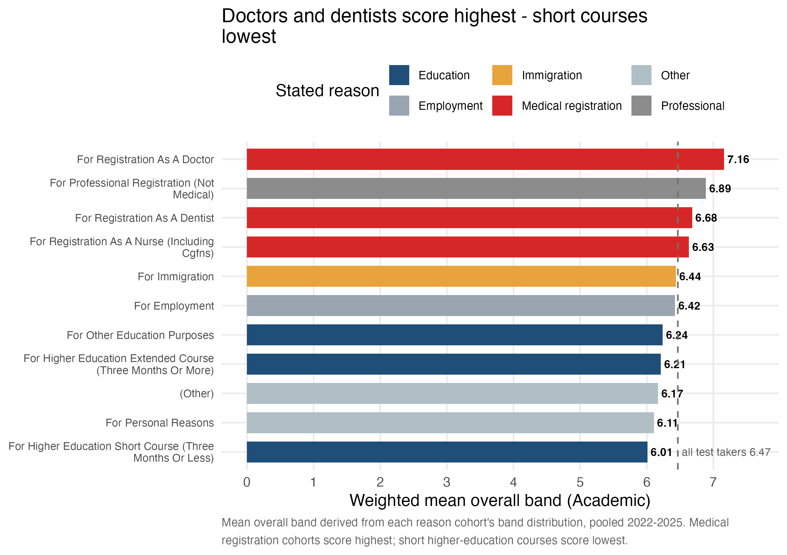

Writing Is the Wall: Why Native Speakers Don’t Top the IELTS
Introduction
The International English Language Testing System (IELTS) is the world’s most widely taken English test, with the four skills — Listening, Reading, Writing, Speaking — each scored on a 1–9 band scale and averaged into an overall band. The IELTS research team publishes transparent statistics on how different groups of test takers perform, and this week’s dataset bundles those aggregations for three year cohorts (2022–2023, 2023–2024, 2024–2025) and the two exam modules: Academic and General Training.
This report answers four questions, each turning into a standalone visual:
- Which part is hardest? Writing is the wall of the Academic module.
- Do native English speakers top their own test? No — they rank 4th.
- Why not? The band distributions tell the real story.
- Does the reason for sitting the test matter? Yes — a lot.
Data & Methodology
- Source: IELTS official test statistics, curated for TidyTuesday by Elio Campitelli.
- Five files: band distributions (
demo_by_*) and mean scores (performance_by_*), split by first language, nationality, and — for the demo files — reason for taking the test. - Coverage: 46 language groups appear in the performance data (with an Academic overall mean for 46 after merging the duplicated “Ibo/lgbo” entry into “Ibo/Igbo”); 58 nationalities.
- Band system: 12 bins from
<4to9(12 bins,<4treated as 3.5 in calculations). - Data note: the
percentcolumns are proportions (0–1), not percentages; mean scores are pooled across the three year cohorts where figures aggregate them.
Caveat. These are aggregate group means and proportions — not individual test takers. Differences between languages and nationalities reflect a mix of test-prep culture, migration flows, and selection effects (who sits the test and why), not any claim about innate ability. No causation is implied.
Finding 1 — Writing is the wall of the Academic module
Alt text: connected line chart of mean band score by test part for the Academic (navy) and General Training (orange) modules. Writing is the lowest point of the Academic line at 6.05; listening the highest at 6.65. General Training is flatter, with reading and writing tied at the bottom.
When every language group is averaged together, writing is the hardest part of the Academic module — mean 6.05 bands — while listening is the easiest (6.65). This is not an artifact of a few struggling groups:
- Writing is the weakest skill for 83% of the 46 language groups in the data.
- Reading sits only slightly higher (6.55); speaking (6.40) sits between the two.
- The pattern flips in General Training: there, reading (6.02) and writing (6.03) tie as the hardest parts, because GT Reading and GT Writing are simpler than their Academic counterparts — the GT Writing tasks (a letter, a short essay) are easier than the Academic essay, so the relative difficulty shifts to reading.
Productive skill — producing language — is consistently harder than receptive skill for nearly every group.
Finding 2 — Native English speakers rank 4th

Alt text: horizontal lollipop chart ranking all language groups by mean Academic overall band. German is first at 7.61 (navy), English 4th at 6.93 (red), and the remaining languages grey. Japanese, Uzbek, Arabic and Bengali sit at the bottom.
You might expect native speakers to walk the test. They do not:
| Rank | Language | Mean overall (Academic) |
|---|---|---|
| 1 | German | 7.61 |
| 2 | Greek | 7.17 |
| 3 | Italian | 6.96 |
| 4 | English | 6.93 |
German speakers average 7.61 — nearly 0.7 of a band above English speakers (6.93), who finish 4th. At the other end, Japanese (5.86) and Arabic (5.93) groups score lowest. Two structural reasons leap out:
- Who sits the test. IELTS is a gateway for migration and study. Native-English speakers take it for specific professional/visa reasons, not because they need to prove proficiency — the average native candidate is not the average native speaker.
- Test familiarity. Candidates from countries with strong test-prep ecosystems (Germany, Greece, Italy) train intensively for the IELTS format. Practice beats birthright on a standardized test.
Finding 3 — Why: the distributions, not the averages

Alt text: overlaid band-score distributions (filled curves) for German (navy), English (red) and Arabic (amber) Academic test takers. German peaks at band 8, English spreads across 6.5-8.5, Arabic peaks near 5.5.
Averages flatten the story. German, English, and Arabic speakers score very differently across the band scale:
- German candidates bunch at the top: the peak is at band 8 (36% of takers), and over 60% score 7.5 or above. This is a tightly trained cohort.
- English candidates spread across 6.5–8.5 with no single dominant band — a mix of skilled professionals and visa applicants, but also far more variance.
- Arabic candidates skew low, peaking around band 5.5 (5.93) with a long tail upward.
So the German–English gap in Finding 2 is not one outlier group: it is the shape of the whole German distribution sliding right. English speakers are not the top band, they are the widest band.
Finding 4 — The reason for sitting predicts the score

Alt text: horizontal bars of mean overall Academic band by stated reason for taking the test. Medical registration reasons (doctor, dentist, nurse) are red and highest (7.16 for doctors); education reasons are navy and lowest (6.01 for short courses). A dashed line marks the 6.47 overall average.
People sit IELTS for very different reasons, and those reasons sort by score almost perfectly:
- Medical registration cohorts score highest — doctors 7.16 (the top of the table), dentists 6.68, nurses 6.63. These are high-stakes, selective professional pipelines where candidates must hit high minimum bands.
- General immigration and employment sit near the middle (6.44 / 6.42).
- Higher-education applicants score lowest — extended courses 6.21, short courses 6.01. University-bound candidates are often younger and earlier in their English journey.
The ranking is a selection story: the stricter the downstream requirement, the stronger the cohort sitting the test.
The Big Picture
Three separate questions converge on one answer: scores reflect who sits the test, not how they speak English. Writing is the universal wall (Finding 1); native speakers, unpressured by selective requirements, land mid-table (Finding 2) because their cohort is a broad, untrained slice (Finding 3); and the sharpest, most goal-driven cohorts — medical registrants — top the field (Finding 4).
The overall mean is stable across the three years (Academic 6.45 → 6.51; General Training 6.13–6.25), confirming there is no year-over-year trend to chase. The signal is all in who takes the test.
Reproducibility
analysis.R— full pipeline: loading, band-to-number conversion, Ibo merge, and all four figures.outputs/—key_numbers.csv,part_profiles.csv,language_ladder.csv,reason_scores.csv.figures/*.png— the four charts above.
Run everything with:
Data Credit
- Dataset: TidyTuesday (2026-08-18) — curated by Elio Campitelli.
- Original source: IELTS official test statistics (demographic and test-taker performance data, 2022–2025).
- Scoring detail: IELTS band descriptors.